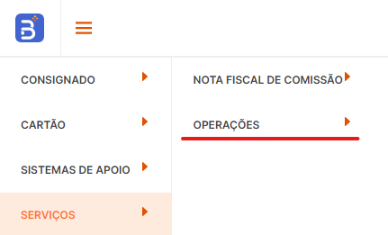

PASSO A PASSO PARA CRIAÇÃO DE SENHAS NO BANCO BANRISUL
Passo 1: Acesse o portal do banco pelo link: https://bemweb.bempromotora.com.br/autenticacao/login ou clicando aqui .
Passo 2: Acessar na aba superior a opção SERVIÇOS.

Passo 3: Selecione a opção OPERAÇÕES
Passo 4: Selecione a opção CADASTRO DE AGENTE
Passo 5: Selecione a opção CADASTRO DE AGENTE CORBAN
Passo 6: Clique em CADASTRAR NOVO AGENTE e em seguida preencha todos os campos e clique em CADASTRAR